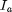
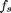
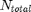
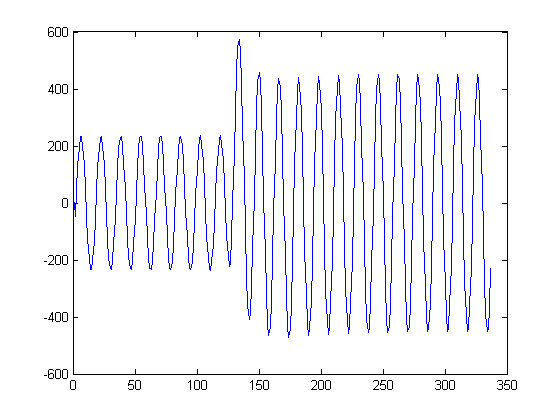
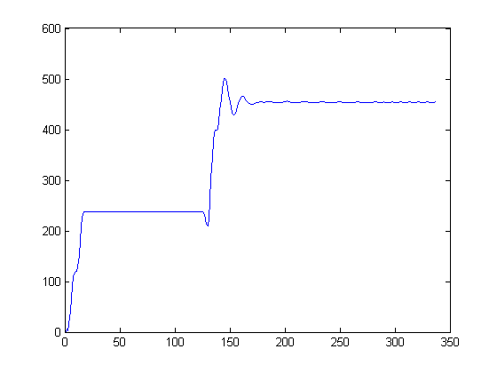
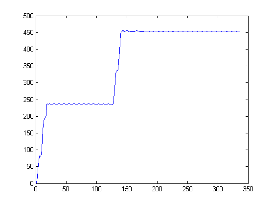
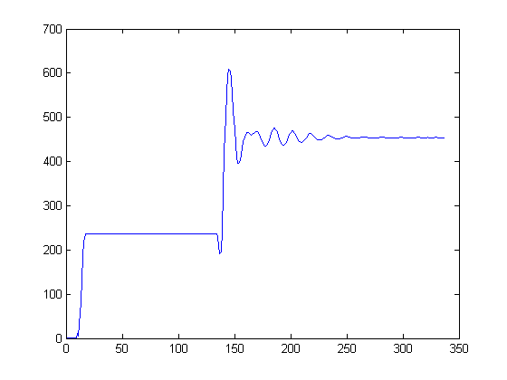
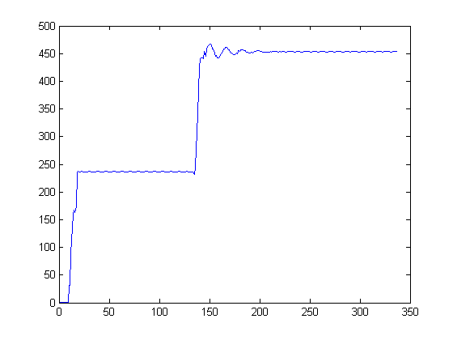
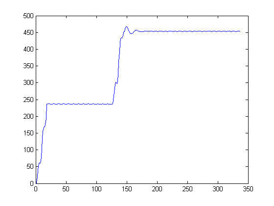

Phasor estimation example
In this example, the current phasor estimation is made with the FCDFT and HCDFT with and without Mimic Filter, and with Modified Cossine Filter. The main goal of this example is to show the DC exponential decay offset effect in the phasor estimators.
Contents
Load file with simulated fault, which contains current and voltage signals.
file = load('SIMULATED_FAULT.dat');
Phase A current - 
Ia = file(:,8);
time vector
t = file(:,2);
Anti-Aliasing Filter
To avoid aliasing effect, an analog anti-aliasing filter is used. The analog filter used is the 2º order Butterworth with a 480 Hz cut-off frequency for a 960 Hz sampling frequency.
% % % Filter Data % $f_c$ - cut-off frequency fc = 480; order = 2;
Filter project with normal frequency
[zerosNorm,polesNorm,gainNorm] = buttap(order); [numNorm,denNorm] = zp2tf(zerosNorm,polesNorm,gainNorm);
Readapt filter frequency
[num,den] = lp2lp(numNorm,denNorm,2*pi*fc);
filtered
Ia = lsim(tf(num,den),Ia,t);
Sampling
The sampling frequency chosen is 960 Hz, giving 16 samples per cycle
f - Fundamental frequency in Hz
f = 60;
Angular frequency in rad/s
w = 2*pi*f;
T - Fundamental period in s
T = 1/f;
N - Samples per cycle
N = 16;
 - Sampling frequency in Hz
fs = N*f;
discretization step in s
dtd = 1/fs;
 - Total samples
Ntotal = length(t);
Step simulation in ms
dt = 10e-6;
Obtaining the step reason dividing the required sampling frequency by the step simulation
p1 = round(dtd/dt);
Discret current
Ia = Ia(1:p1:Ntotal,1);
Discrete time
t = t(1:p1:Ntotal);
Ploting the current
figure1 = figure(1); plot(Ia);
Phasor Estimation
For the phasor estimation, the sampled signal is windowing depending of the phasor estimator. For each window, the phasor estimation is computed along the signal length
FCDFT
Variables initialization
Ntotal = length(Ia);
P_FOURIER = ones(Ntotal,1);
window = ones(N,1)*0.1;
for k=1:Ntotal
Signal windowing
for j=1:N-1 window(j) = window(j+1); end window(N) = Ia(k);
Computing the phasor
P_FOURIER(k)= FCDFT(window);
end
FCDFT with MIMIC filter
Computing the digital mimic filter parameters for a time constant with 1 cycle
cycles = 1; [K,taud] = mimicParameters(cycles);
Applying mimic filter in the signal
Variables initialization
Ntotal = length(Ia);
P_FOURIER_MIMIC = ones(Ntotal,1);
for k=2:Ntotal
Mimic Filter usage
P_FOURIER_MIMIC(k) = K*((1+taud)*P_FOURIER(k) - taud*P_FOURIER(k-1));
end
Ploting signal with FCDFT
figure2 = figure(2); plot(abs(P_FOURIER));
Ploting signal with FCDFT with mimic filter
figure3 = figure(3); plot(abs(P_FOURIER_MIMIC));
HCDFT
Ntotal = length(Ia);
P_HFOURIER = ones(Ntotal,1);
window = ones(N,1)*0.1;
for k=1:Ntotal
Signal windowing
for j=1:N-1 window(j) = window(j+1); end window(N) = Ia(k);
Computing the phasor
P_HFOURIER(k)= HCDFT(window);
end
HCDFT with MIMIC filter
Computing the digital mimic filter parameters for a time constant with 1 cycle
cycles = 1; [K,taud] = mimicParameters(cycles);
Applying mimic filter in the signal
Variables initialization
Ntotal = length(Ia);
P_HFOURIER_MIMIC = ones(Ntotal,1);
for k = 2:Ntotal
Mimic Filter usage
P_HFOURIER_MIMIC(k) = K*((1+taud)*P_HFOURIER(k) - taud*P_HFOURIER(k-1));
end
Ploting signal with HCDFT
figure4 = figure(4); plot(abs(P_HFOURIER));
Ploting signal with HCDFT with digital mimic filter
figure5 = figure(5); plot(abs(P_HFOURIER_MIMIC));
Phasor Estimation using Modified Cossine Filter
Modified Cossine Filter Variables initialization
Ntotal = length(Ia);
P_MDC = ones(Ntotal,1);
window = ones(N+1,1)*0.1;
for k = 1:Ntotal
Signal windowing
for j = 1:N window(j) = window(j+1); end window(N+1) = Ia(k);
Computing the phasor
P_MDC(k) = MDC(window);
end % Ploting the Phasor computed using modified cossine filter figure6 = figure(6); plot(abs(P_MDC)); snapnow;